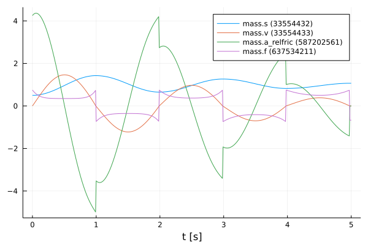
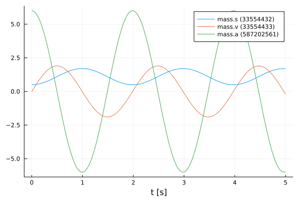
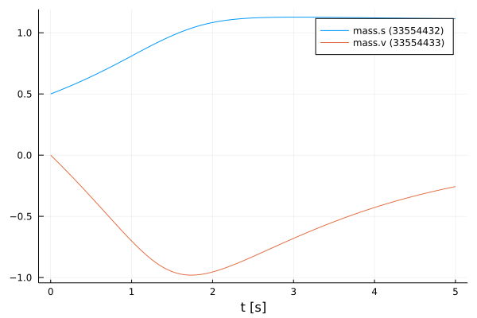
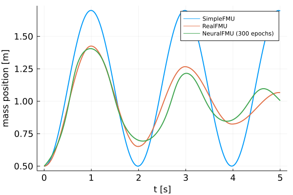
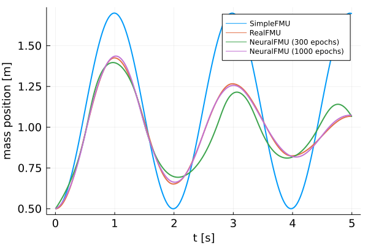

Creation and training of ME-NeuralFMUs
Tutorial by Johannes Stoljar, Tobias Thummerer
License
Copyright (c) 2021 Tobias Thummerer, Lars Mikelsons, Johannes Stoljar
Licensed under the MIT license. See LICENSE file in the project root for details.
Motivation
This Julia Package is motivated by the application of hybrid modeling. This package enables the user to integrate his simulation model between neural networks (NeuralFMU). For this, the simulation model must be exported as FMU (functional mock-up unit), which corresponds to a widely used standard. The big advantage of hybrid modeling with artificial neural networks is, that effects that are difficult to model (because they might be unknown) can be easily learned by the neural networks. For this purpose, the NeuralFMU is trained with measurement data containing the unmodeled physical effect. The final product is a simulation model including the orignially unmodeled effects. Another big advantage of the NeuralFMU is that it works with little data, because the FMU already contains the characterisitic functionality of the simulation and only the missing effects are added.
NeuralFMUs need not to be as easy as in this example. Basically a NeuralFMU can combine different ANN topologies that manipulate any FMU-input (system state, system inputs, time) and any FMU-output (system state derivative, system outputs, other system variables). However, for this example a NeuralFMU topology as shown in the following picture is used.

NeuralFMU (ME) from [1].
Introduction to the example
In this example, simplified modeling of a one-dimensional spring pendulum (without friction) is compared to a model of the same system that includes a nonlinear friction model. The FMU with the simplified model will be named simpleFMU in the following and the model with the friction will be named realFMU. At the beginning, the actual state of both simulations is shown, whereby clear deviations can be seen in the graphs. The realFMU serves as a reference graph. The simpleFMU is then integrated into a NeuralFMU architecture and a training of the entire network is performed. After the training the final state is compared again to the realFMU. It can be clearly seen that by using the NeuralFMU, learning of the friction process has taken place.
Target group
The example is primarily intended for users who work in the field of first principle and/or hybrid modeling and are further interested in hybrid model building. The example wants to show how simple it is to combine FMUs with machine learning and to illustrate the advantages of this approach.
Other formats
Besides this Jupyter Notebook there is also a Julia file with the same name, which contains only the code cells and for the documentation there is a Markdown file corresponding to the notebook.
Getting started
Installation prerequisites
| Description | Command | Alternative | |
|---|---|---|---|
| 1. | Enter Package Manager via | ] | |
| 2. | Install FMI via | add FMI | add " https://github.com/ThummeTo/FMI.jl " |
| 3. | Install FMIFlux via | add FMIFlux | add " https://github.com/ThummeTo/FMIFlux.jl " |
| 4. | Install Flux via | add Flux | |
| 5. | Install DifferentialEquations via | add DifferentialEquations | |
| 6. | Install Plots via | add Plots |
Code section
To run the example, the previously installed packages must be included.
# imports
using FMI
using FMIFlux
using Flux
using DifferentialEquations: Tsit5
import PlotsAfter importing the packages, the path to the Functional Mock-up Units (FMUs) is set. The FMU is a model exported meeting the Functional Mock-up Interface (FMI) Standard. The FMI is a free standard (fmi-standard.org) that defines a container and an interface to exchange dynamic models using a combination of XML files, binaries and C code zipped into a single file.
The objec-orientated structure of the SpringPendulum1D (simpleFMU) can be seen in the following graphic and corresponds to a simple modeling.

In contrast, the model SpringFrictionPendulum1D (realFMU) is somewhat more accurate, because it includes a friction component.

Here the path for the SpringPendulum1D and the SpringFrictionPendulum1D model is set:
simpleFMUPath = joinpath(dirname(@__FILE__), "../model/SpringPendulum1D.fmu")
realFMUPath = joinpath(dirname(@__FILE__), "../model/SpringFrictionPendulum1D.fmu")
println("SimpleFMU path: ", simpleFMUPath)
println("RealFMU path: ", realFMUPath)SimpleFMU path: ../model/SpringPendulum1D.fmu
RealFMU path: ../model/SpringFrictionPendulum1D.fmuNext, the start time and end time of the simulation are set. Finally, a step size is specified to store the results of the simulation at these time steps.
tStart = 0.0
tStep = 0.01
tStop = 5.0
tSave = collect(tStart:tStep:tStop)501-element Vector{Float64}:
0.0
0.01
0.02
0.03
0.04
0.05
0.06
0.07
0.08
0.09
0.1
0.11
0.12
⋮
4.89
4.9
4.91
4.92
4.93
4.94
4.95
4.96
4.97
4.98
4.99
5.0RealFMU
In the next lines of code the FMU of the realFMU model is loaded and instantiated.
realFMU = fmiLoad(realFMUPath)
fmiInstantiate!(realFMU; loggingOn=false)
fmiInfo(realFMU)┌ Info: fmi2Unzip(...): Successfully unzipped 28 files at `C:\Users\JOHANN~1\AppData\Local\Temp\fmijl_xMsNGp\SpringFrictionPendulum1D`.
└ @ FMI C:\Users\Johannes Stoljar\.julia\packages\FMI\l4qPg\src\FMI2.jl:273
┌ Info: fmi2Load(...): FMU supports both CS and ME, using CS as default if nothing specified.
└ @ FMI C:\Users\Johannes Stoljar\.julia\packages\FMI\l4qPg\src\FMI2.jl:376
#################### Begin information for FMU ####################
Model name: SpringFrictionPendulum1D
FMI-Version: 2.0
GUID: {b02421b8-652a-4d48-9ffc-c2b223aa1b94}
Generation tool: Dymola Version 2020x (64-bit), 2019-10-10
Generation time: 2021-11-23T13:36:30Z
Var. naming conv.: structured
Event indicators: 24
Inputs: 0
Outputs: 0
States: 2
┌ Info: fmi2Load(...): FMU resources location is `file:///C:/Users/JOHANN~1/AppData/Local/Temp/fmijl_xMsNGp/SpringFrictionPendulum1D/resources`
└ @ FMI C:\Users\Johannes Stoljar\.julia\packages\FMI\l4qPg\src\FMI2.jl:384
33554432 ["mass.s"]
33554433 ["mass.v", "mass.v_relfric"]
Supports Co-Simulation: true
Model identifier: SpringFrictionPendulum1D
Get/Set State: true
Serialize State: true
Dir. Derivatives: true
Var. com. steps: true
Input interpol.: true
Max order out. der.: 1
Supports Model-Exchange: true
Model identifier: SpringFrictionPendulum1D
Get/Set State: true
Serialize State: true
Dir. Derivatives: true
##################### End information for FMU #####################Both the start and end time are set via the fmiSetupExperiment() function. The experiment is initialized to get the information of the continuous states. You can get all continuous states of a FMU by the function fmiGetContinuousStates() and this is also done for the realFMU. It has two states: The first state is the position of the mass, which is initilized with $0.5m$, the second state is the velocity, which is initialized with $0\frac{m}{s}$.
fmiSetupExperiment(realFMU, tStart, tStop)
fmiEnterInitializationMode(realFMU)
fmiExitInitializationMode(realFMU)
x₀ = fmiGetContinuousStates(realFMU)2-element Vector{Float64}:
0.5
0.0In the following code block the realFMU is simulated, still specifying which variables are included. After the simulation is finished the result of the realFMU can be plotted. This plot also serves as a reference for the other model (simpleFMU).
vrs = ["mass.s", "mass.v", "mass.a", "mass.f"]
_, realSimData = fmiSimulate(realFMU, tStart, tStop; recordValues=vrs, saveat=tSave, setup=false, reset=false)
fmiPlot(realFMU, vrs, realSimData)
After the plots are created, the FMU is unloaded.
fmiUnload(realFMU)The data from the simualtion of the realFMU, are divided into position and velocity data. These data will be needed later.
velReal = collect(data[2] for data in realSimData.saveval)
posReal = collect(data[1] for data in realSimData.saveval)501-element Vector{Float64}:
0.5
0.5002147350958549
0.5008572068150906
0.5019307343013393
0.5034377791759037
0.5053797361931734
0.507757421354132
0.5105710760625108
0.5138202661486302
0.5175035429290001
0.5216187663581402
0.5261643784845171
0.5311361825547609
⋮
1.0618338496933084
1.0629441718413108
1.0639256972572486
1.0647763670106132
1.06549412855799
1.0660771282511987
1.066523587371857
1.066831801521633
1.0670001400125004
1.0670339828286313
1.0670339828276312
1.067033982826631SimpleFMU
The following lines load, instantiate, simulate and plot the simpleFMU just like the realFMU. The differences between both systems can be clearly seen from the plots. In the plot for the realFMU it can be seen that the oscillation continues to decrease due to the effect of the friction. If you would simulate long enough, the oscillation would come to a standstill in a certain time. The oscillation in the simpleFMU behaves differently, since the friction was not taken into account here. The oscillation in this model would continue to infinity with the same oscillation amplitude. From this observation the desire of an improvement of this model arises.
simpleFMU = fmiLoad(simpleFMUPath)
fmiInstantiate!(simpleFMU; loggingOn=false)
fmiInfo(simpleFMU)
vrs = ["mass.s", "mass.v", "mass.a"]
_, simpleSimData = fmiSimulate(simpleFMU, tStart, tStop; recordValues=vrs, saveat=tSave, reset=false)
fmiPlot(simpleFMU, vrs, simpleSimData)┌ Info: fmi2Unzip(...): Successfully unzipped 28 files at `C:\Users\JOHANN~1\AppData\Local\Temp\fmijl_waNZuu\SpringPendulum1D`.
└ @ FMI C:\Users\Johannes Stoljar\.julia\packages\FMI\l4qPg\src\FMI2.jl:273
#################### Begin information for FMU ####################
Model name: SpringPendulum1D
FMI-Version: 2.0
GUID: {5030e5a4-87c0-42cf-8779-74ebea1906aa}
Generation tool: Dymola Version 2020x (64-bit), 2019-10-10
Generation time: 2021-07-21T05:28:53Z
Var. naming conv.: structured
Event indicators: 0
Inputs: 0
Outputs: 0
States: 2
33554432 ["mass.s"]
33554433 ["mass.v"]
Supports Co-Simulation: true
Model identifier: SpringPendulum1D
Get/Set State: true
Serialize State: true
Dir. Derivatives: true
Var. com. steps: true
Input interpol.: true
Max order out. der.: 1
Supports Model-Exchange: true
Model identifier: SpringPendulum1D
Get/Set State: true
Serialize State: true
Dir. Derivatives: true
##################### End information for FMU #####################
┌ Info: fmi2Load(...): FMU supports both CS and ME, using CS as default if nothing specified.
└ @ FMI C:\Users\Johannes Stoljar\.julia\packages\FMI\l4qPg\src\FMI2.jl:376
┌ Info: fmi2Load(...): FMU resources location is `file:///C:/Users/JOHANN~1/AppData/Local/Temp/fmijl_waNZuu/SpringPendulum1D/resources`
└ @ FMI C:\Users\Johannes Stoljar\.julia\packages\FMI\l4qPg\src\FMI2.jl:384
The data from the simualtion of the simpleFMU, are divided into position and velocity data. These data will be needed later to plot the results.
velSimple = collect(data[2] for data in simpleSimData.saveval)
posSimple = collect(data[1] for data in simpleSimData.saveval)501-element Vector{Float64}:
0.5
0.5003017486819993
0.5012013738965729
0.5026995396955733
0.5047948922822549
0.5074848828353776
0.5107669098963398
0.5146380970115599
0.5190939866425227
0.5241313516074874
0.5297437685244978
0.5359273025527665
0.5426739933868466
⋮
1.6817454106640481
1.6860262621029507
1.6897211631373532
1.6928264987575015
1.6953392775960465
1.6972564609104965
1.698576276381512
1.6992975610979462
1.6994196580640215
1.6989425410415007
1.6978667510389276
1.6961926527257059NeuralFMU
Loss function
In order to train our model, a loss function must be implemented. The solver of the NeuralFMU can calculate the gradient of the loss function. The gradient descent is needed to adjust the weights in the neural network so that the sum of the error is reduced and the model becomes more accurate.
The loss function in this implmentation consists of the mean squared error (mse) from the real position of the realFMU simulation (posReal) and the position data of the network (posNet). $ mse = \frac{1}{n} \sum\limits_{i=0}^n (posReal[i] - posNet[i])^2 $
As it is indicated with the comments, one could also additionally consider the mse from the real velocity (velReal) and the velocity from the network (velNet). The error in this case would be calculated from the sum of both errors.
# loss function for training
function lossSum()
solution = neuralFMU(x₀, tStart)
posNet = collect(data[1] for data in solution.u)
#velNet = collect(data[2] for data in solution.u)
Flux.Losses.mse(posReal, posNet) #+ Flux.Losses.mse(velReal, velNet)
endlossSum (generic function with 1 method)Callback
To output the loss in certain time intervals, a callback is implemented as a function in the following. Here a counter is incremented, every twentieth pass the loss function is called and the average error is printed out.
# callback function for training
global counter = 0
function callb()
global counter += 1
if counter % 20 == 1
avgLoss = lossSum()
@info "Loss [$counter]: $(round(avgLoss, digits=5)) Avg displacement in data: $(round(sqrt(avgLoss), digits=5))"
end
endcallb (generic function with 1 method)Structure of the NeuralFMU
In the following, the topology of the NeuralFMU is constructed. It consists of an input layer, which then leads into the simpleFMU model. The ME-FMU computes the state derivatives for a given system state. Following the simpleFMU is a dense layer that has exactly as many inputs as the model has states (and therefore state derivatives). The output of this layer consists of 16 output nodes and a tanh activation function. The next layer has 16 input and output nodes with the same activation function. The last layer is again a dense layer with 16 input nodes and the number of states as outputs. Here, it is important that no tanh-activation function follows, because otherwise the pendulums state values would be limited to the interval $[-1;1]$.
# NeuralFMU setup
numStates = fmiGetNumberOfStates(simpleFMU)
net = Chain(inputs -> fmiEvaluateME(simpleFMU, inputs),
Dense(numStates, 16, tanh),
Dense(16, 16, tanh),
Dense(16, numStates))Chain(
var"#11#12"(),
Dense(2, 16, tanh), [90m# 48 parameters[39m
Dense(16, 16, tanh), [90m# 272 parameters[39m
Dense(16, 2), [90m# 34 parameters[39m
)[90m # Total: 6 arrays, [39m354 parameters, 1.758 KiB.Definition of the NeuralFMU
The instantiation of the ME-NeuralFMU is done as a one-liner. The FMU (simpleFMU), the structure of the network net, start tStart and end time tStop, the numerical solver Tsit5() and the time steps tSave for saving are specified.
neuralFMU = ME_NeuralFMU(simpleFMU, net, (tStart, tStop), Tsit5(); saveat=tSave);Plot before training
Here the state trajactory of the simpleFMU is recorded. Doesn't really look like a pendulum yet, but the system is random initialized by default. In the later plots, the effect of learning can be seen.
solutionBefore = neuralFMU(x₀, tStart)
fmiPlot(simpleFMU, solutionBefore)
Training of the NeuralFMU
For the training of the NeuralFMU the parameters are extracted. The known ADAM optimizer for minimizing the gradient descent is used as further passing parameters. In addition, the previously defined loss and callback function, as well as the number of epochs are passed.
# train
paramsNet = Flux.params(neuralFMU)
optim = ADAM()
Flux.train!(lossSum, paramsNet, Iterators.repeated((), 300), optim; cb=callb) ┌ Info: Loss [1]: 0.07528 Avg displacement in data: 0.27437
└ @ Main In[12]:8
┌ Info: Loss [21]: 0.04558 Avg displacement in data: 0.2135
└ @ Main In[12]:8
┌ Info: Loss [41]: 0.04354 Avg displacement in data: 0.20867
└ @ Main In[12]:8
┌ Info: Loss [61]: 0.04236 Avg displacement in data: 0.20582
└ @ Main In[12]:8
┌ Info: Loss [81]: 0.04193 Avg displacement in data: 0.20478
└ @ Main In[12]:8
┌ Info: Loss [101]: 0.04153 Avg displacement in data: 0.20379
└ @ Main In[12]:8
┌ Info: Loss [121]: 0.04094 Avg displacement in data: 0.20233
└ @ Main In[12]:8
┌ Info: Loss [141]: 0.04003 Avg displacement in data: 0.20008
└ @ Main In[12]:8
┌ Info: Loss [161]: 0.03917 Avg displacement in data: 0.19793
└ @ Main In[12]:8
┌ Info: Loss [181]: 0.03808 Avg displacement in data: 0.19515
└ @ Main In[12]:8
┌ Info: Loss [201]: 0.03616 Avg displacement in data: 0.19016
└ @ Main In[12]:8
┌ Info: Loss [221]: 0.0313 Avg displacement in data: 0.17692
└ @ Main In[12]:8
┌ Info: Loss [241]: 0.01322 Avg displacement in data: 0.11497
└ @ Main In[12]:8
┌ Info: Loss [261]: 0.006 Avg displacement in data: 0.07743
└ @ Main In[12]:8
┌ Info: Loss [281]: 0.00461 Avg displacement in data: 0.06793
└ @ Main In[12]:8Comparison of the plots
Here three plots are compared with each other and only the position of the mass is considered. The first plot represents the simpleFMU, the second represents the realFMU (reference) and the third plot represents the result after training the NeuralFMU.
# plot results mass.s
solutionAfter = neuralFMU(x₀, tStart)
fig = Plots.plot(xlabel="t [s]", ylabel="mass position [m]", linewidth=2,
xtickfontsize=12, ytickfontsize=12,
xguidefontsize=12, yguidefontsize=12,
legendfontsize=8, legend=:topright)
posNeuralFMU = collect(data[1] for data in solutionAfter.u)
Plots.plot!(fig, tSave, posSimple, label="SimpleFMU", linewidth=2)
Plots.plot!(fig, tSave, posReal, label="RealFMU", linewidth=2)
Plots.plot!(fig, tSave, posNeuralFMU, label="NeuralFMU (300 epochs)", linewidth=2)
fig 
Continue training and plotting
As can be seen from the previous figure, the plot of the NeuralFMU has not yet fully converged against the realFMU, so the training of the NeuralFMU is continued. After further training, the plot of NeuralFMU is added to the figure again. The effect of the longer training is well recognizable, since the plot of the NeuralFMU had further converged.
Flux.train!(lossSum, paramsNet, Iterators.repeated((), 700), optim; cb=callb)
# plot results mass.s
solutionAfter = neuralFMU(x₀, tStart)
posNeuralFMU = collect(data[1] for data in solutionAfter.u)
Plots.plot!(fig, tSave, posNeuralFMU, label="NeuralFMU (1000 epochs)", linewidth=2)
fig ┌ Info: Loss [301]: 0.00412 Avg displacement in data: 0.06419
└ @ Main In[12]:8
┌ Info: Loss [321]: 0.00379 Avg displacement in data: 0.0616
└ @ Main In[12]:8
┌ Info: Loss [341]: 0.0035 Avg displacement in data: 0.05918
└ @ Main In[12]:8
┌ Info: Loss [361]: 0.00322 Avg displacement in data: 0.05673
└ @ Main In[12]:8
┌ Info: Loss [381]: 0.00295 Avg displacement in data: 0.05432
└ @ Main In[12]:8
┌ Info: Loss [401]: 0.0027 Avg displacement in data: 0.05199
└ @ Main In[12]:8
┌ Info: Loss [421]: 0.00246 Avg displacement in data: 0.04961
└ @ Main In[12]:8
┌ Info: Loss [441]: 0.00223 Avg displacement in data: 0.04724
└ @ Main In[12]:8
┌ Info: Loss [461]: 0.00201 Avg displacement in data: 0.0448
└ @ Main In[12]:8
┌ Info: Loss [481]: 0.00179 Avg displacement in data: 0.04236
└ @ Main In[12]:8
┌ Info: Loss [501]: 0.00159 Avg displacement in data: 0.03988
└ @ Main In[12]:8
┌ Info: Loss [521]: 0.0014 Avg displacement in data: 0.03736
└ @ Main In[12]:8
┌ Info: Loss [541]: 0.00121 Avg displacement in data: 0.03481
└ @ Main In[12]:8
┌ Info: Loss [561]: 0.00104 Avg displacement in data: 0.03221
└ @ Main In[12]:8
┌ Info: Loss [581]: 0.00087 Avg displacement in data: 0.02957
└ @ Main In[12]:8
┌ Info: Loss [601]: 0.00072 Avg displacement in data: 0.02692
└ @ Main In[12]:8
┌ Info: Loss [621]: 0.00059 Avg displacement in data: 0.02432
└ @ Main In[12]:8
┌ Info: Loss [641]: 0.00048 Avg displacement in data: 0.02189
└ @ Main In[12]:8
┌ Info: Loss [661]: 0.00039 Avg displacement in data: 0.01966
└ @ Main In[12]:8
┌ Info: Loss [681]: 0.00031 Avg displacement in data: 0.01768
└ @ Main In[12]:8
┌ Info: Loss [701]: 0.00026 Avg displacement in data: 0.01598
└ @ Main In[12]:8
┌ Info: Loss [721]: 0.00021 Avg displacement in data: 0.01447
└ @ Main In[12]:8
┌ Info: Loss [741]: 0.00017 Avg displacement in data: 0.01323
└ @ Main In[12]:8
┌ Info: Loss [761]: 0.00015 Avg displacement in data: 0.0123
└ @ Main In[12]:8
┌ Info: Loss [781]: 0.00013 Avg displacement in data: 0.01157
└ @ Main In[12]:8
┌ Info: Loss [801]: 0.00012 Avg displacement in data: 0.01099
└ @ Main In[12]:8
┌ Info: Loss [821]: 0.00011 Avg displacement in data: 0.01054
└ @ Main In[12]:8
┌ Info: Loss [841]: 0.0001 Avg displacement in data: 0.01017
└ @ Main In[12]:8
┌ Info: Loss [861]: 0.0001 Avg displacement in data: 0.00983
└ @ Main In[12]:8
┌ Info: Loss [881]: 9.0e-5 Avg displacement in data: 0.00958
└ @ Main In[12]:8
┌ Info: Loss [901]: 9.0e-5 Avg displacement in data: 0.00936
└ @ Main In[12]:8
┌ Info: Loss [921]: 8.0e-5 Avg displacement in data: 0.00917
└ @ Main In[12]:8
┌ Info: Loss [941]: 8.0e-5 Avg displacement in data: 0.00901
└ @ Main In[12]:8
┌ Info: Loss [961]: 8.0e-5 Avg displacement in data: 0.00887
└ @ Main In[12]:8
┌ Info: Loss [981]: 8.0e-5 Avg displacement in data: 0.00875
└ @ Main In[12]:8
Finally, the FMU is cleaned-up.
fmiUnload(simpleFMU)Summary
Based on the plots, it can be seen that the NeuralFMU is able to adapt the friction model of the realFMU. After 300 runs, the curves do not overlap very well, but this can be achieved by longer training (1000 runs) or a better initialization.
Source
[1] Tobias Thummerer, Lars Mikelsons and Josef Kircher. 2021. NeuralFMU: towards structural integration of FMUs into neural networks. Martin Sjölund, Lena Buffoni, Adrian Pop and Lennart Ochel (Ed.). Proceedings of 14th Modelica Conference 2021, Linköping, Sweden, September 20-24, 2021. Linköping University Electronic Press, Linköping (Linköping Electronic Conference Proceedings ; 181), 297-306. DOI: 10.3384/ecp21181297